API Reference
Index¤
Rasters.RastersRasters.AbstractProjectedRasters.AbstractRasterRasters.AbstractRasterSeriesRasters.AbstractRasterStackRasters.BandRasters.FileArrayRasters.FileStackRasters.MappedRasters.OpenStackRasters.ProjectedRasters.RasterRasters.RasterDiskArrayRasters.RasterSeriesRasters.RasterStackRasters.aggregateRasters.aggregate!Rasters.boolmaskRasters.classifyRasters.classify!Rasters.combineRasters.convertlookupRasters.coverageRasters.coverage!Rasters.cropRasters.crsRasters.disaggregateRasters.disaggregate!Rasters.extendRasters.extractRasters.mappedboundsRasters.mappedcrsRasters.mappedindexRasters.maskRasters.mask!Rasters.missingmaskRasters.missingvalRasters.mosaicRasters.mosaic!Rasters.pointsRasters.rasterizeRasters.rasterize!Rasters.replace_missingRasters.reprojectRasters.reprojectRasters.rplotRasters.setcrsRasters.setmappedcrsRasters.sliceRasters.smapseriesRasters.trimRasters.zonal
Reference - Exported functions¤
#
Rasters.Rasters — Module.
Rasters


Rasters.jl defines common types and methods for reading, writing and manipulating rasterized spatial data.
These currently include raster arrays like GeoTIFF and NetCDF, R grd files, multi-layered stacks, and multi-file series of arrays and stacks.
:warning: Packages extensions and Rasters 0.8 and onwards
On Julia 1.9 we can put additional packages in extensions, so the code only loads when you load a specific package. Rasters.jl was always intended to work like this, and its finally possible. This reduced package using time from many seconds to well under a second.
But, it means you have to manually load packages you need for each backend or additional functionality.
For example, to use the GDAL backend, and download files, you now need to do:
using Rasters, ArchGDAL, RasterDataSources
where previously it was just using Rasters.
Sources and packages needed:
:gdal:using ArchGDAL:netcdf:using NCDatasets:grd: built-in.:smap:using HDF5:grib: not yet finished.
Other functionality in extensions:
- Raster data downloads, like
Worldclim{Climate}:using RasterDataSources - Makie plots:
using Makie - Coordinate transformations for gdal rasters:
using CoordinateTransformations
Quick start
Install the package by typing:
]
add Rasters
using Rasters
Using Rasters to read GeoTiff or NetCDF files will output something similar to the following toy examples. This is possible because Rasters.jl extends DimensionalData.jl so that spatial data can be indexed using named dimensions like X, Y and Ti (time) and e.g. spatial coordinates.
using Rasters, Dates
lon, lat = X(25:1:30), Y(25:1:30)
ti = Ti(DateTime(2001):Month(1):DateTime(2002))
ras = Raster(rand(lon, lat, ti)) # this generates random numbers with the dimensions given
6×6×13 Raster{Float64,3} with dimensions:
X Sampled{Int64} 25:1:30 ForwardOrdered Regular Points,
Y Sampled{Int64} 25:1:30 ForwardOrdered Regular Points,
Ti Sampled{DateTime} DateTime("2001-01-01T00:00:00"):Month(1):DateTime("2002-01-01T00:00:00") ForwardOrdered Regular Points
extent: Extent(X = (25, 30), Y = (25, 30), Ti = (DateTime("2001-01-01T00:00:00"), DateTime("2002-01-01T00:00:00")))
missingval: missing
values: [:, :, 1]
25 26 27 28 29 30
25 0.9063 0.427328 0.0320967 0.297023 0.0571002 0.891377
26 0.443494 0.867547 0.350546 0.150155 0.24565 0.711039
27 0.745673 0.0991336 0.930332 0.893537 0.805931 0.360583
28 0.512083 0.125287 0.959434 0.354868 0.337824 0.259563
29 0.253849 0.692209 0.774092 0.131798 0.823656 0.390013
30 0.334152 0.136551 0.183555 0.941133 0.450484 0.461862
[and 12 more slices...]
Getting the lookup array from dimensions
lon = lookup(ras, X) # if X is longitude
lat = lookup(ras, Y) # if Y is latitude
Sampled{Int64} ForwardOrdered Regular Points
wrapping: 25:1:30
Select by index
Selecting a time slice by index is done via
ras[Ti(1)]
6×6 Raster{Float64,2} with dimensions:
X Sampled{Int64} 25:1:30 ForwardOrdered Regular Points,
Y Sampled{Int64} 25:1:30 ForwardOrdered Regular Points
and reference dimensions:
Ti Sampled{DateTime} DateTime("2001-01-01T00:00:00"):Month(1):DateTime("2001-01-01T00:00:00") ForwardOrdered Regular Points
extent: Extent(X = (25, 30), Y = (25, 30))
missingval: missing
values: 25 26 27 28 29 30
25 0.9063 0.427328 0.0320967 0.297023 0.0571002 0.891377
26 0.443494 0.867547 0.350546 0.150155 0.24565 0.711039
27 0.745673 0.0991336 0.930332 0.893537 0.805931 0.360583
28 0.512083 0.125287 0.959434 0.354868 0.337824 0.259563
29 0.253849 0.692209 0.774092 0.131798 0.823656 0.390013
30 0.334152 0.136551 0.183555 0.941133 0.450484 0.461862
ras[Ti=1]
6×6 Raster{Float64,2} with dimensions:
X Sampled{Int64} 25:1:30 ForwardOrdered Regular Points,
Y Sampled{Int64} 25:1:30 ForwardOrdered Regular Points
and reference dimensions:
Ti Sampled{DateTime} DateTime("2001-01-01T00:00:00"):Month(1):DateTime("2001-01-01T00:00:00") ForwardOrdered Regular Points
extent: Extent(X = (25, 30), Y = (25, 30))
missingval: missing
values: 25 26 27 28 29 30
25 0.9063 0.427328 0.0320967 0.297023 0.0571002 0.891377
26 0.443494 0.867547 0.350546 0.150155 0.24565 0.711039
27 0.745673 0.0991336 0.930332 0.893537 0.805931 0.360583
28 0.512083 0.125287 0.959434 0.354868 0.337824 0.259563
29 0.253849 0.692209 0.774092 0.131798 0.823656 0.390013
30 0.334152 0.136551 0.183555 0.941133 0.450484 0.461862
or and interval of indices using the syntax =a:b or (a:b)
ras[Ti(1:10)]
6×6×10 Raster{Float64,3} with dimensions:
X Sampled{Int64} 25:1:30 ForwardOrdered Regular Points,
Y Sampled{Int64} 25:1:30 ForwardOrdered Regular Points,
Ti Sampled{DateTime} DateTime("2001-01-01T00:00:00"):Month(1):DateTime("2001-10-01T00:00:00") ForwardOrdered Regular Points
extent: Extent(X = (25, 30), Y = (25, 30), Ti = (DateTime("2001-01-01T00:00:00"), DateTime("2001-10-01T00:00:00")))
missingval: missing
values: [:, :, 1]
25 26 27 28 29 30
25 0.9063 0.427328 0.0320967 0.297023 0.0571002 0.891377
26 0.443494 0.867547 0.350546 0.150155 0.24565 0.711039
27 0.745673 0.0991336 0.930332 0.893537 0.805931 0.360583
28 0.512083 0.125287 0.959434 0.354868 0.337824 0.259563
29 0.253849 0.692209 0.774092 0.131798 0.823656 0.390013
30 0.334152 0.136551 0.183555 0.941133 0.450484 0.461862
[and 9 more slices...]
Select by value
ras[Ti=At(DateTime(2001))]
6×6 Raster{Float64,2} with dimensions:
X Sampled{Int64} 25:1:30 ForwardOrdered Regular Points,
Y Sampled{Int64} 25:1:30 ForwardOrdered Regular Points
and reference dimensions:
Ti Sampled{DateTime} DateTime("2001-01-01T00:00:00"):Month(1):DateTime("2001-01-01T00:00:00") ForwardOrdered Regular Points
extent: Extent(X = (25, 30), Y = (25, 30))
missingval: missing
values: 25 26 27 28 29 30
25 0.9063 0.427328 0.0320967 0.297023 0.0571002 0.891377
26 0.443494 0.867547 0.350546 0.150155 0.24565 0.711039
27 0.745673 0.0991336 0.930332 0.893537 0.805931 0.360583
28 0.512083 0.125287 0.959434 0.354868 0.337824 0.259563
29 0.253849 0.692209 0.774092 0.131798 0.823656 0.390013
30 0.334152 0.136551 0.183555 0.941133 0.450484 0.461862
More options are available, like Near, Contains and Where. For more details go here.
Dimensions can also be used in most Base and Statistics methods like mean and reduce where dims arguments are required. Much of the behaviour is covered in the DimensionalData docs.
See the docs for more details and examples for Rasters.jl.
Data-source abstraction
Rasters provides a standardised interface that allows many source data types to be used with identical syntax.
-
Scripts and packages building on Rasters.jl can treat
Raster,RasterStack, andRasterSeriesas black boxes.- The data could hold GeoTiff or NetCDF files,
Arrays in memory orCuArrays on the GPU - they will all behave in the same way. RasterStackcan be backed by a Netcdf or HDF5 file, or aNamedTupleofRasterholding.tiffiles, or allRasterin memory.- Users do not have to deal with the specifics of spatial file types.
Projectedlookups with Cylindrical projections can by indexed using other Cylindrical projections by setting themappedcrskeyword on construction. You don't need to know the underlying projection, the conversion is handled automatically. This means lat/lonEPSG(4326)can be used seamlessly if you need that.
- The data could hold GeoTiff or NetCDF files,
Bugs, errors and making issues for Rasters.jl
Raster data is complicated and there are many places for subtle or not-so-subtle bugs to creep in.
We need bug reports to reduce how often they occur over time. But also, we need issues that are easy to reproduce or it isn't practically possible to fix them.
Because there are so many raster file types and variations of them, most of the time we need the exact file that caused your problem to know how to fix it, and be sure that we have actually fixed it when we are done. So fixing a Rasters.jl bug nearly always involves downloading some file and running some code that breaks with it (if you can trigger the bug without a file, thats great! but its not always possible).
To make an issue we can fix quickly (or at all) there are three key steps:
- Include the file in an accessible place on web without autentication or any other work on our part, so we can just get it and find your bug. You can put it on a file hosting platform (e.g. google drive, drop box, whatever you use) and share the url.
- Add a minimum working example to the issue template that first downloads the file, then runs the function that triggers the bug.
- Paste the complete stack trace of the error it produces, right to the bottom, into the issue template. Then we can be sure we reproduced the same problem.
Good issues are really appreciated, but they do take just a little extra effort with Rasters.jl because of this need for files.
#
Rasters.AbstractRaster — Type.
AbstractRaster <: DimensionalData.AbstractDimArray
Abstract supertype for objects that wrap an array (or location of an array) and metadata about its contents. It may be memory or hold a FileArray, which holds the filename, and is only opened when required.
AbstractRasters inherit from AbstractDimArray from DimensionalData.jl. They can be indexed as regular Julia arrays or with DimensionalData.jl Dimensions. They will plot as a heatmap in Plots.jl with correct coordinates and labels, even after slicing with getindex or view. getindex on a AbstractRaster will always return a memory-backed Raster.
#
Rasters.AbstractRasterSeries — Type.
AbstractRasterSeries <: DimensionalData.AbstractDimensionalArray
Abstract supertype for high-level DimensionalArray that hold RasterStacks, Rasters, or the paths they can be loaded from. RasterSeries are indexed with dimensions as with a AbstractRaster. This is useful when you have multiple files containing rasters or stacks of rasters spread over dimensions like time and elevation.
As much as possible, implementations should facilitate loading entire directories and detecting the dimensions from metadata.
This allows syntax like below for a series of stacks of arrays:
RasterSeries[Time(Near(DateTime(2001, 1))][:temp][Y(Between(70, 150)), X(Between(-20,20))] |> plot`
RasterSeries is the concrete implementation.
#
Rasters.AbstractRasterStack — Type.
AbstractRasterStack
Abstract supertype for objects that hold multiple AbstractRasters that share spatial dimensions.
They are NamedTuple-like structures that may either contain NamedTuple of AbstractRasters, string paths that will load AbstractRasters, or a single path that points to a file containing multiple layers, like NetCDF or HDF5. Use and syntax is similar or identical for all cases.
AbstractRasterStack can hold layers that share some or all of their dimensions. They cannot have the same dimension with different length or spatial extent as another layer.
getindex on an AbstractRasterStack generally returns a memory backed standard Raster. raster[:somelayer] |> plot plots the layers array, while raster[:somelayer, X(1:100), Band(2)] |> plot will plot the subset without loading the whole array.
getindex on an AbstractRasterStack with a key returns another stack with getindex applied to all the arrays in the stack.
#
Rasters.Band — Type.
Band <: Dimension
Band(val=:)
Band Dimension for multi-band rasters.
Example:
banddim = Band(10:10:100)
# Or
val = A[Band(1)]
# Or
mean(A; dims=Band)
#
Rasters.Mapped — Type.
Mapped <: AbstractProjected
Mapped(order, span, sampling, crs, mappedcrs)
Mapped(; order=AutoOrder(), span=AutoSpan(), sampling=AutoSampling(), crs=nothing, mappedcrs)
An AbstractSampled LookupArray, where the dimension index has been mapped to another projection, usually lat/lon or EPSG(4326). Mapped matches the dimension format commonly used in netcdf files.
Fields and behaviours are identical to Sampled with the addition of crs and mappedcrs fields.
The mapped dimension index will be used as for Sampled, but to save in another format the underlying crs may be used to convert it.
#
Rasters.Projected — Type.
Projected <: AbstractProjected
Projected(order, span, sampling, crs, mappedcrs)
Projected(; order=AutoOrder(), span=AutoSpan(), sampling=AutoSampling(), crs, mappedcrs=nothing)
An AbstractSampled LookupArray with projections attached.
Fields and behaviours are identical to Sampled with the addition of crs and mappedcrs fields.
If both crs and mappedcrs fields contain CRS data (in a GeoFormat wrapper from GeoFormatTypes.jl) the selector inputs and plot axes will be converted from and to the specified mappedcrs projection automatically. A common use case would be to pass mappedcrs=EPSG(4326) to the constructor when loading eg. a GDALarray:
GDALarray(filename; mappedcrs=EPSG(4326))
The underlying crs will be detected by GDAL.
If mappedcrs is not supplied (ie. mappedcrs=nothing), the base index will be shown on plots, and selectors will need to use whatever format it is in.
#
Rasters.Raster — Type.
Raster <: AbsractRaster
Raster(filepath::AbstractString, dims; kw...)
Raster(A::AbstractArray{T,N}, dims; kw...)
Raster(A::AbstractRaster; kw...)
A generic AbstractRaster for spatial/raster array data. It may hold memory-backed arrays or FileArray, that simply holds the String path to an unopened file. This will only be opened lazily when it is indexed with getindex or when read(A) is called. Broadcasting, taking a view, reversing and most other methods do not load data from disk: they are applied later, lazily.
Keywords
dims:TupleofDimensions for the array.lazy: ABoolspecifying if to load the stack lazily from disk.falseby default.name:Symbolname for the array, which will also retreive named layers ifRasteris used on a multi-layered file like a NetCDF.missingval: value reprsenting missing data, normally detected form the file. Set manually when you know the value is not specified or is incorrect. This will not change any values in the raster, it simply assigns which value is treated as missing. To replace all of the missing values in the raster, usereplace_missing.metadata:ArrayMetadataobject for the array, orNoMetadata().crs: the coordinate reference system of the objectsXDim/YDimdimensions. Only set this if you know the detected crs is incrorrect, or it is not present in the file. Thecrsis expected to be a GeoFormatTypes.jlCRSorMixedGeoFormattype.mappedcrs: the mapped coordinate reference system of the objectsXDim/YDimdimensions. forMappedlookups these are the actual values of the index. ForProjectedlookups this can be used to index in eg.EPSG(4326)lat/lon values, having it converted automatically. Only set this if the detectedmappedcrsin incorrect, or the file does not have amappedcrs, e.g. a tiff. Themappedcrsis expected to be a GeoFormatTypes.jlCRSorMixedGeoFormattype.dropband: drop single band dimensions.trueby default.
Internal Keywords
In some cases it is possible to set these keywords as well.
data: can replace the data in anAbstractRasterrefdims:Tuple ofpositionDimensions the array was sliced from, defaulting to().
#
Rasters.RasterSeries — Type.
RasterSeries <: AbstractRasterSeries
RasterSeries(rasters::AbstractArray{<:AbstractRaster}, dims; [refdims])
RasterSeries(stacks::AbstractArray{<:AbstractRasterStack}, dims; [refdims])
RasterSeries(paths::AbstractArray{<:AbstractString}, dims; child, duplicate_first, kw...)
RasterSeries(path:::AbstractString, dims; ext, separator, child, duplicate_first, kw...)
Concrete implementation of AbstractRasterSeries.
A RasterSeries is an array of Rasters or RasterStacks, along some dimension(s).
Existing Raster RasterStack can be wrapped in a RasterSeries, or new files can be loaded from an array of String or from a single String.
A single String can refer to a whole directory, or the name of a series of files in a directory, sharing a common stem. The differnce between the filenames can be used as the lookup for the series.
For example, with some tifs at these paths :
"series_dir/myseries_2001-01-01T00:00:00.tif"
"series_dir/myseries_2002-01-01T00:00:00.tif"
We can load a RasterSeries with a DateTime lookup:
julia> ser = RasterSeries("series_dir/myseries.tif", Ti(DateTime))
2-element RasterSeries{Raster,1} with dimensions:
Ti Sampled{DateTime} DateTime[DateTime("2001-01-01T00:00:00"), DateTime("2002-01-01T00:00:00")] ForwardOrdered Irregular Points
The DateTime suffix is parsed from the filenames. Using Ti(Int) would try to parse integers intead.
Just using the directory will also work, unless there are other files mixed in it:
julia> ser = RasterSeries("series_dir", Ti(DateTime))
2-element RasterSeries{Raster,1} with dimensions:
Ti Sampled{DateTime} DateTime[DateTime("2001-01-01T00:00:00"), DateTime("2002-01-01T00:00:00")] ForwardOrdered Irregular Points
Arguments
dims: series dimension/s.
Keywords
When loading a series from a Vector of String paths or a single String path:
child: constructor of child objects for use when filenames are passed in, can beRasterorRasterStack. Defaults toRaster.duplicate_first::Bool: wether to duplicate the dimensions and metadata of the first file with all other files. This can save load time with a large series where dimensions are identical.falseby default.lazy: load files lazily,falseby default.kw: keywords passed to the child constructorRasterorRasterStack.
When loading a series from a single String path:
ext: filename extension such as ".tiff" or ".nc". Use to specify a subset of files if only a directory path is passed in.separator: separator used to split lookup elements from the rest of a filename. '_' by default.
Others:
refdims: existing reference dimension/s, normally not required.
#
Rasters.RasterStack — Type.
RasterStack <: AbstrackRasterStack
RasterStack(data...; name, kw...)
RasterStack(data::Union{Vector,Tuple}; name, kw...)
RasterStack(data::NamedTuple; kw...))
RasterStack(s::AbstractRasterStack; kw...)
RasterStack(s::AbstractRaster; layersfrom=Band, kw...)
RasterStack(filename::AbstractString; kw...)
Load a file path or a NamedTuple of paths as a RasterStack, or convert arguments, a Vector or NamedTuple of Rasters to RasterStack.
Arguments
data: ANamedTupleofRasters, or aVector,Tupleor splatted arguments ofRaster. The latter options must pass anamekeyword argument.filename: A file (such as netcdf or tif) to be loaded as a stack, or a directory path containing multiple files.
Keywords
name: Used as stack layer names when aTuple,Vectoror splat ofRasteris passed in. Has no effect whenNameTupleis used - theNamedTuplekeys are the layer names.metadata: ADictorDimensionalData.Metadataobject.refdims:TupleofDimensionthat the stack was sliced from.layersfrom:Dimensionto source stack layers from if the file is not already multi-layered.nothingis default, so that a singleRasterStack(raster)is a single layered stack.RasterStack(raster; layersfrom=Band)will use the bands as layers.lazy: ABoolspecifying whether to load the stack lazily from disk.falseby default.dropband: drop single band dimensions when creating stacks from filenames.trueby default.
files = (temp="temp.tif", pressure="pressure.tif", relhum="relhum.tif")
stack = RasterStack(files; mappedcrs=EPSG(4326))
stack[:relhum][Lat(Contains(-37), Lon(Contains(144))
#
DimensionalData.modify — Method.
modify(f, series::AbstractRasterSeries)
Apply function f to the data of the child object. If the child is an AbstractRasterStack the function will be passed on to its child AbstractRasters.
f must return an idenically sized array.
This method triggers a complete rebuild of all objects, and disk based objects will be transferred to memory.
An example of the usefulnesss of this is for swapping out array backend for an entire series to CuArray from CUDA.jl to copy data to a GPU.
#
Rasters.aggregate — Function.
aggregate(method, object, scale; filename, progress, skipmissing)
Aggregate a Raster, or all arrays in a RasterStack or RasterSeries, by scale using method.
Arguments
method: a function such asmeanorsumthat can combine the value of multiple cells to generate the aggregated cell, or aLocuslikeStart()orCenter()that specifies where to sample from in the interval.object: Object to aggregate, likeAbstractRasterSeries,AbstractStack,AbstractRasterorDimension.scale: the aggregation factor, which can be an integer, a tuple of integers for each dimension, or anyDimension,SelectororIntcombination you can usually use ingetindex. Using aSelectorwill determine the scale by the distance from the start of the index.
When the aggregation scale of is larger than the array axis, the length of the axis is used.
Keywords
skipmissingval: iftrue, anymissingvalwill be skipped during aggregation, so that only areas of all missing values will be aggregated tomissingval. Iffalse, any aggegrated area containing amissingvalwill be assignedmissingval.filename: a filename to write to directly, useful for large files.suffix: a string or value to append to the filename. A tuple ofsuffixwill be applied to stack layers.keys(stack)are the default.progress: show a progress bar,trueby default,falseto hide.
Example
using Rasters, RasterDataSources, Statistics, Plots
using Rasters: Center
st = read(RasterStack(WorldClim{Climate}; month=1))
ag = aggregate(Center(), st, (Y(20), X(20)); skipmissingval=true, progress=false)
plot(ag)
savefig("docs/build/aggregate_example.png"); nothing
# output
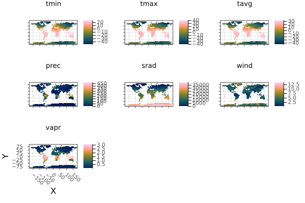
Note: currently it is faster to aggregate over memory-backed arrays. Use read on src before use where required.
#
Rasters.aggregate! — Method.
aggregate!(method, dst::AbstractRaster, src::AbstractRaster, scale; skipmissingval=false)
Aggregate array src to array dst by scale, using method.
Arguments
method: a function such asmeanorsumthat can combine the value of multiple cells to generate the aggregated cell, or aLocuslikeStart()orCenter()that species where to sample from in the interval.scale: the aggregation factor, which can be an integer, a tuple of integers for each dimension, or anyDimension,SelectororIntcombination you can usually use ingetindex. Using aSelectorwill determine the scale by the distance from the start of the index in thesrcarray.
When the aggregation scale of is larger than the array axis, the length of the axis is used.
Keywords
progress: show a progress bar.skipmissingval: iftrue, anymissingvalwill be skipped during aggregation, so that only areas of all missing values will be aggregated tomissingval. Iffalse, any aggegrated area containing amissingvalwill be assignedmissingval.
Note: currently it is much faster to aggregate over memory-backed arrays. Use read on src before use where required.
#
Rasters.boolmask — Function.
boolmask(obj::Raster; [missingval])
boolmask(obj; [to, res, size])
Create a mask array of Bool values, from another Raster. An AbstractRasterStack or AbstractRasterSeries are also accepted, but a mask is taken of the first layer or object not all of them.
The array returned from calling boolmask on a AbstractRaster is a Raster with the same dimensions as the original array and a missingval of false.
Arguments
obj: aRaster, a GeoInterface.jl geometry, or a vector or table of geometries.
Raster / RasterStack Keywords
missingval: The missing value of the source array, with defaultmissingval(raster).
Keywords
to: aRaster,RasterStack,TupleofDimensionorExtents.Extent. If notoobject is provided the extent will be calculated from the geometries, Additionally, when notoobject or anExtentis passed forto, thesizeorreskeyword must also be used.res: the resolution of the dimensions, aRealorTuple{<:Real,<:Real}. Only required whentois not used or is anExtents.Extent, andsizeis not used.size: the size of the output array, as aTuple{Int,Int}or singleIntfor a square. Only required whentois not used or is anExtents.Extent, andresis not used.crs: acrswhich will be attached to the resulting raster whentonot passed or is anExtent. Otherwise the crs fromtois used.shape: Forcedatato be treated as:polygon,:lineor:pointgeometries. using points or lines as polygons may have unexpected results.-
boundary: for polygons, include pixels where the:centeris inside the polygon, where the polygon:touchesthe pixel, or that are completely:insidethe polygon. The default is:center. -
threaded: run operations in parallel,falseby default. In some circumstancesthreadedcan give large speedups over single-threaded operation. This can be true for complicated geometries written into low-resolution rasters, but may not be for simple geometries with high-resolution rasters. With very large rasters threading may be counter productive due to excessing memory use. Caution should also be used:threadedshould not be used in in-place functions wrinting toBitArrayor other arrays where race conditions can occur. progress: show a progress bar,trueby default,falseto hide.
And specifically for shape=:polygon:
boundary: include pixels where the:centeris inside the polygon, where the line:touchesthe pixel, or that are completely:insideinside the polygon. The default is:center.
For tabular data, feature collections and other iterables
collapse: iftrue, collapse all geometry masks into a single mask. Otherwise return a Raster with an additionalgeometrydimension, so that each slice along this axis is the mask of thegeometryopbject of each row of the table, feature in the feature collection, or just each geometry in the iterable.
Example
using Rasters, RasterDataSources, ArchGDAL, Plots, Dates
wc = Raster(WorldClim{Climate}, :prec; month=1)
boolmask(wc) |> plot
savefig("docs/build/boolmask_example.png"); nothing
# output
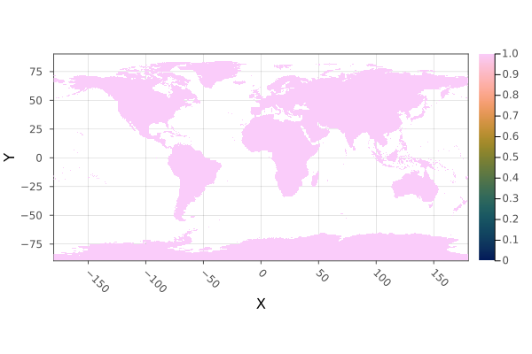
WARNING: This feature is experimental. It may change in future versions, and may not be 100% reliable in all cases. Please file github issues if problems occur.
#
Rasters.classify — Function.
classify(x, pairs; lower=(>=), upper=(<), others=nothing)
classify(x, pairs...; lower, upper, others)
Create a new array with values in x classified by the values in pairs.
pairs can hold tuples fo values (2, 3), a Fix2 function e.g. <=(1), a Tuple of Fix2 e.g. (>=(4), <(7)), or an IntervalSets.jl interval, e.g. 3..9 or OpenInterval(10, 12). pairs can also be a n * 3 matrix where each row is lower bounds, upper bounds, replacement.
If tuples or a Matrix are used, the lower and upper keywords define how the lower and upper boundaries are chosen.
If others is set other values not covered in pairs will be set to that values.
Arguments
x: aRasterorRasterStackpairs: each pair contains a value and a replacement, a tuple of lower and upper range and a replacement, or a Tuple ofFix2like(>(x), <(y).
Keywords
lower: Which comparison (<or<=) to use for lower values, ifFix2are not used.upper: Which comparison (>or>=) to use for upper values, ifFix2are not used.others: A value to assign to all values not included inpairs. Passingnothing(the default) will leave them unchanged.
Example
using Rasters, RasterDataSources, ArchGDAL, Plots
A = Raster(WorldClim{Climate}, :tavg; month=1)
classes = <=(15) => 10,
15..25 => 20,
25..35 => 30,
>(35) => 40
classified = classify(A, classes; others=0, missingval=0)
plot(classified; c=:magma)
savefig("docs/build/classify_example.png"); nothing
# output
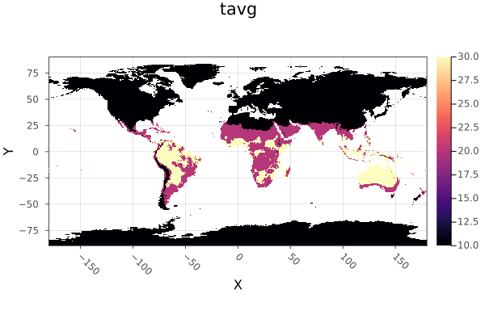
WARNING: This feature is experimental. It may change in future versions, and may not be 100% reliable in all cases. Please file github issues if problems occur.
#
Rasters.classify! — Method.
classify!(x, pairs...; lower, upper, others)
classify!(x, pairs; lower, upper, others)
Classify the values of x in-place, by the values in pairs.
If Fix2 is not used, the lower and upper keywords
If others is set other values not covered in pairs will be set to that values.
Arguments
x: aRasterorRasterStackpairs: each pair contains a value and a replacement, a tuple of lower and upper range and a replacement, or a Tuple ofFix2like(>(x), <(y).
Keywords
lower: Which comparison (<or<=) to use for lower values, ifFix2are not used.upper: Which comparison (>or>=) to use for upper values, ifFix2are not used.others: A value to assign to all values not included inpairs. Passingnothing(the default) will leave them unchanged.
Example
classify! to disk, with key steps:
- copying a tempory file so we don't write over the RasterDataSources.jl version.
- use
openwithwrite=trueto open the file with disk-write permissions. - use
Float32like10.0f0for all our replacement values andother, because the file is stored asFloat32. Attempting to write some other type will fail.
using Rasters, RasterDataSources, ArchGDAL, Plots
# Download and copy the file
filename = getraster(WorldClim{Climate}, :tavg; month=6)
tempfile = tempname() * ".tif"
cp(filename, tempfile)
# Define classes
classes = (5, 15) => 10,
(15, 25) => 20,
(25, 35) => 30,
>=(35) => 40
# Open the file with write permission
open(Raster(tempfile); write=true) do A
classify!(A, classes; others=0)
end
# Open it again to plot the changes
plot(Raster(tempfile); c=:magma)
savefig("docs/build/classify_bang_example.png"); nothing
# output
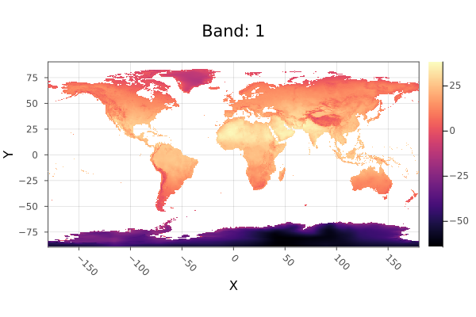
WARNING: This feature is experimental. It may change in future versions, and may not be 100% reliable in all cases. Please file github issues if problems occur.
#
Rasters.combine — Method.
combine(A::Union{AbstractRaster,AbstractRasterStack,AbstracRasterSeries}, [dims]) => Raster
Combine a RasterSeries along some dimension/s, creating a new Raster or RasterStack, depending on the contents of the series.
If dims are passed, only the specified dimensions will be combined with a RasterSeries returned, unless dims is all the dims in the series.
WARNING: This feature is experimental. It may change in future versions, and may not be 100% reliable in all cases. Please file github issues if problems occur.
<a id='Rasters.convertlookup-Tuple{Type{<:LookupArray}, AbstractDimArray}' href='#Rasters.convertlookup-Tuple{Type{<:LookupArray}, AbstractDimArray}'>#
Rasters.convertlookup — Method.
convertlookup(dstlookup::Type{<:LookupArray}, x)
Convert the dimension lookup between Projected and Mapped. Other dimension lookups pass through unchanged.
This is used to e.g. save a netcdf file to GeoTiff.
#
Rasters.coverage! — Method.
coverage!(A, geom; [mode, scale])
Calculate the area of a raster covered by GeoInterface.jl compatible geomtry geom, as a fraction.
Each pixel is assigned a grid of points (by default 10 x 10) that are each checked to be inside the geometry. The sum divided by the number of points to give coverage.
In pracice, most pixel coverage is not calculated this way - shortcuts that produce the same result are taken wherever possible.
If geom is an AbstractVector or table, the mode keyword will determine how coverage is combined.
Keywords
-
mode: method for combining multiple geometries -unionorsum.union(the default) gives the areas covered by all geometries. Usefull in spatial coverage where overlapping regions should not be counted twice. The returned raster will containFloat64values between0.0and1.0.sumgives the summed total of the areas covered by all geometries, as in taking the sum of runningcoverageseparately on all geometries. The returned values are positiveFloat64.
For a single geometry, the
modekeyword has no effect - the result is the same. *scale:Integerscale of pixel subdivision. The default of10means each pixel has 10 x 10 or 100 points that contribute to coverage. Using100means 10,000 points contribute. Performance will decline asscaleincreases. Memory use will grow byscale^2whenmode=:union. *threaded: run operations in parallel,falseby default. In some circumstancesthreadedcan give large speedups over single-threaded operation. This can be true for complicated geometries written into low-resolution rasters, but may not be for simple geometries with high-resolution rasters. With very large rasters threading may be counter productive due to excessing memory use. Caution should also be used:threadedshould not be used in in-place functions wrinting toBitArrayor other arrays where race conditions can occur. *progress: show a progress bar,trueby default,falseto hide. *vebose: whether to print messages about potential problems.trueby default.
#
Rasters.coverage — Method.
coverage(mode, geom; [to, res, size, scale, verbose, progress])
coverage(geom; [to, mode, res, size, scale, verbose, progress])
Calculate the area of a raster covered by GeoInterface.jl compatible geomtry geom, as a fraction.
Each pixel is assigned a grid of points (by default 10 x 10) that are each checked to be inside the geometry. The sum divided by the number of points to give coverage.
In pracice, most pixel coverage is not calculated this way - shortcuts that produce the same result are taken wherever possible.
If geom is an AbstractVector or table, the mode keyword will determine how coverage is combined.
Keywords
-
mode: method for combining multiple geometries -unionorsum.union(the default) gives the areas covered by all geometries. Usefull in spatial coverage where overlapping regions should not be counted twice. The returned raster will containFloat64values between0.0and1.0.sumgives the summed total of the areas covered by all geometries, as in taking the sum of runningcoverageseparately on all geometries. The returned values are positiveFloat64.
For a single geometry, the
modekeyword has no effect - the result is the same. *scale:Integerscale of pixel subdivision. The default of10means each pixel has 10 x 10 or 100 points that contribute to coverage. Using100means 10,000 points contribute. Performance will decline asscaleincreases. Memory use will grow byscale^2whenmode=:union. *threaded: run operations in parallel,falseby default. In some circumstancesthreadedcan give large speedups over single-threaded operation. This can be true for complicated geometries written into low-resolution rasters, but may not be for simple geometries with high-resolution rasters. With very large rasters threading may be counter productive due to excessing memory use. Caution should also be used:threadedshould not be used in in-place functions wrinting toBitArrayor other arrays where race conditions can occur. *progress: show a progress bar,trueby default,falseto hide. *vebose: whether to print messages about potential problems.trueby default. -
to: aRaster,RasterStack,TupleofDimensionorExtents.Extent. If notoobject is provided the extent will be calculated from the geometries, Additionally, when notoobject or anExtentis passed forto, thesizeorreskeyword must also be used. size: the size of the output array, as aTuple{Int,Int}or singleIntfor a square. Only required whentois not used or is anExtents.Extent, andresis not used.res: the resolution of the dimensions, aRealorTuple{<:Real,<:Real}. Only required whentois not used or is anExtents.Extent, andsizeis not used.
#
Rasters.crop — Function.
crop(x; to)
crop(xs...; to)
Crop one or multiple AbstractRaster or AbstractRasterStack x to match the size of the object to, or smallest of any dimensions that are shared.
crop is lazy, using a view into the object rather than alocating new memory.
Keywords
to: the object to crop to. If notokeyword is passed, the smallest shared area of allxsis used.touches:trueorfalse. Whether to useToucheswraper on the object extent. When lines need to be included in e.g. zonal statistics,trueshould be used.
As crop is lazy, filename and suffix keywords are not used.
Example
Crop to another raster:
using Rasters, RasterDataSources, Plots
evenness = Raster(EarthEnv{HabitatHeterogeneity}, :evenness)
rnge = Raster(EarthEnv{HabitatHeterogeneity}, :range)
# Roughly cut out New Zealand from the evenness raster
nz_bounds = X(165 .. 180), Y(-50 .. -32)
nz_evenness = evenness[nz_bounds...]
# Crop range to match evenness
nz_range = crop(rnge; to=nz_evenness)
plot(nz_range)
savefig("docs/build/nz_crop_example.png")
nothing
# output
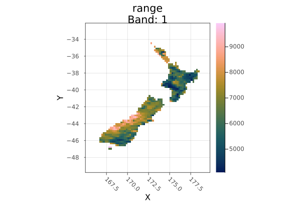
Crop to a polygon:
using Rasters, RasterDataSources, Plots, Dates, Shapefile, Downloads
# Download a borders shapefile
shapefile_url = "https://github.com/nvkelso/natural-earth-vector/raw/master/10m_cultural/ne_10m_admin_0_countries.shp"
shapefile_name = "boundary.shp"
isfile(shapefile_name) || Downloads.download(shapefile_url, shapefile_name)
shp = Shapefile.Handle(shapefile_name).shapes[6]
evenness = Raster(EarthEnv{HabitatHeterogeneity}, :evenness)
argentina_evenness = crop(evenness; to=shp)
plot(argentina_evenness)
savefig("docs/build/argentina_crop_example.png"); nothing
# output
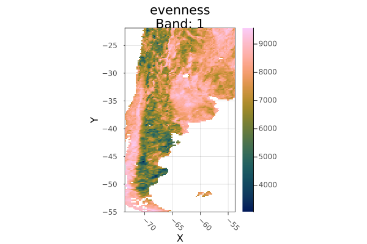
WARNING: This feature is experimental. It may change in future versions, and may not be 100% reliable in all cases. Please file github issues if problems occur.
#
Rasters.crs — Function.
crs(x)
Get the projected coordinate reference system of a Y or X Dimension, or of the Y/X dims of an AbstractRaster.
For Mapped lookup this may be nothing as there may be no projected coordinate reference system at all. See setcrs to set it manually.
#
Rasters.disaggregate — Function.
disaggregate(method, object, scale; filename, progress, keys)
Disaggregate array, or all arrays in a stack or series, by some scale.
Arguments
method: a function such asmeanorsumthat can combine the value of multiple cells to generate the aggregated cell, or aLocuslikeStart()orCenter()that species where to sample from in the interval.object: Object to aggregate, likeAbstractRasterSeries,AbstractStack,AbstractRasteror aDimension.scale: the aggregation factor, which can be an integer, a tuple of integers for each dimension, or anyDimension,SelectororIntcombination you can usually use ingetindex. Using aSelectorwill determine the scale by the distance from the start of the index.
Keywords
progress: show a progress bar.
Note: currently it is faster to aggregate over memory-backed arrays. Use read on src before use where required.
#
Rasters.disaggregate! — Method.
disaggregate!(method, dst::AbstractRaster, src::AbstractRaster, filename, scale)
Disaggregate array src to array dst by some scale, using method.
method: a function such asmeanorsumthat can combine the value of multiple cells to generate the aggregated cell, or aLocuslikeStart()orCenter()that species where to sample from in the interval.scale: the aggregation factor, which can be an integer, a tuple of integers for each dimension, or anyDimension,SelectororIntcombination you can usually use ingetindex. Using aSelectorwill determine the scale by the distance from the start of the index in thesrcarray.
Note: currently it is faster to aggregate over memory-backed arrays. Use read on src before use where required.
#
Rasters.extend — Function.
extend(xs...; [to])
extend(xs; [to])
extend(x::Union{AbstractRaster,AbstractRasterStack}; to, kw...)
Extend one or multiple AbstractRaster to match the area covered by all xs, or by the keyword argument to.
Keywords
to: the Raster or dims to extend to. If notokeyword is passed, the largest shared area of allxsis used.touches:trueorfalse. Whether to useToucheswraper on the object extent. When lines need to be included in e.g. zonal statistics,trueshoudle be used.filename: a filename to write to directly, useful for large files.suffix: a string or value to append to the filename. A tuple ofsuffixwill be applied to stack layers.keys(stack)are the default.
using Rasters, RasterDataSources, Plots
evenness = Raster(EarthEnv{HabitatHeterogeneity}, :evenness)
rnge = Raster(EarthEnv{HabitatHeterogeneity}, :range)
# Roughly cut out South America
sa_bounds = X(-88 .. -32), Y(-57 .. 13)
sa_evenness = evenness[sa_bounds...]
# Extend range to match the whole-world raster
sa_range = extend(sa_evenness; to=rnge)
plot(sa_range)
savefig("docs/build/extend_example.png")
nothing
# output
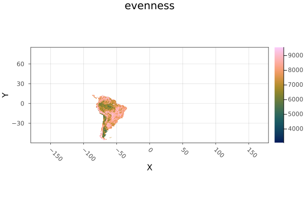
WARNING: This feature is experimental. It may change in future versions, and may not be 100% reliable in all cases. Please file github issues if problems occur.
#
Rasters.extract — Function.
extract(x, geoms; atol)
Extracts the value of Raster or RasterStack at given points, returning an iterable of NamedTuple with properties for :geometry and raster or stack layer values.
Note that if objects have more dimensions than the length of the point tuples, sliced arrays or stacks will be returned instead of single values.
Arguments
x: aRasterorRasterStackto extract values from.geoms: GeoInterface.jl compatible geometries, or tables or iterables of geometries.
Keywords
atol: a tolorerance for floating point lookup values for when theLookupArraycontainsPoints.atolis ignored forIntervals.
Example
Here we extact points matching the occurrence of the Mountain Pygmy Possum, Burramis parvus. This could be used to fit a species distribution model.
using Rasters, RasterDataSources, ArchGDAL, GBIF2, CSV
# Get a stack of BioClim layers, and replace missing values with `missing`
st = RasterStack(WorldClim{BioClim}, (1, 3, 5, 7, 12)) |> replace_missing
# Download some occurrence data
obs = GBIF2.occurrence_search("Burramys parvus"; limit=5, year="2009")
# Convert observations to points
pnts = collect((o.decimalLongitude, o.decimalLatitude) for o in obs if !ismissing(o.decimalLongitude))
# use `extract` to get values for all layers at each observation point.
# We `collect` to get a `Vector` from the lazy iterator.
collect(extract(st, pnts))
# output
5-element Vector{NamedTuple{(:geometry, :bio1, :bio3, :bio5, :bio7, :bio12)}}:
(geometry = (0.21, 40.07), bio1 = 17.077084f0, bio3 = 41.20417f0, bio5 = 30.1f0, bio7 = 24.775f0, bio12 = 446.0f0)
(geometry = (0.03, 39.97), bio1 = 17.076923f0, bio3 = 39.7983f0, bio5 = 29.638462f0, bio7 = 24.153847f0, bio12 = 441.0f0)
(geometry = (0.03, 39.97), bio1 = 17.076923f0, bio3 = 39.7983f0, bio5 = 29.638462f0, bio7 = 24.153847f0, bio12 = 441.0f0)
(geometry = (0.52, 40.37), bio1 = missing, bio3 = missing, bio5 = missing, bio7 = missing, bio12 = missing)
(geometry = (0.32, 40.24), bio1 = 16.321388f0, bio3 = 41.659454f0, bio5 = 30.029825f0, bio7 = 25.544561f0, bio12 = 480.0f0)
#
Rasters.mappedbounds — Function.
mappedbounds(x)
Get the bounds converted to the mappedcrs value.
Whithout ArchGDAL loaded, this is just the regular bounds.
#
Rasters.mappedcrs — Function.
mappedcrs(x)
Get the mapped coordinate reference system for the Y/X dims of an array.
In Projected lookup this is used to convert Selector values form the mappedcrs defined projection to the underlying projection, and to show plot axes in the mapped projection.
In Mapped lookup this is the coordinate reference system of the index values. See setmappedcrs to set it manually.
#
Rasters.mappedindex — Function.
mappedindex(x)
Get the index value of a dimension converted to the mappedcrs value.
Whithout ArchGDAL loaded, this is just the regular dim value.
#
Rasters.mask! — Function.
mask!(x; with, missingval=missingval(A))
Mask A by the missing values of with, or by all values outside with if it is a polygon.
If with is a polygon, creates a new array where points falling outside the polygon have been replaced by missingval(A).
Return a new array with values of A masked by the missing values of with, or by a polygon.
Arguments
x: aRasterorRasterStack.
Keywords
with: anotherAbstractRaster, aAbstractVectorofTuplepoints, or any GeoInterface.jlAbstractGeometry. The coordinate reference system of the point must matchcrs(A).missingval: the missing value to write to A in masked areas, by defaultmissingval(A).
Example
Mask an unmasked AWAP layer with a masked WorldClim layer, by first resampling the mask to match the size and projection.
using Rasters, RasterDataSources, ArchGDAL, Plots, Dates
# Load and plot the file
awap = read(RasterStack(AWAP, (:tmin, :tmax); date=DateTime(2001, 1, 1)))
a = plot(awap; clims=(10, 45), c=:imola)
# Create a mask my resampling a worldclim file
wc = Raster(WorldClim{Climate}, :prec; month=1)
wc_mask = resample(wc; to=awap)
# Mask
mask!(awap; with=wc_mask)
b = plot(awap; clims=(10, 45))
savefig(a, "docs/build/mask_bang_example_before.png");
savefig(b, "docs/build/mask_bang_example_after.png"); nothing
# output
Before mask!:

After mask!:

WARNING: This feature is experimental. It may change in future versions, and may not be 100% reliable in all cases. Please file github issues if problems occur.
#
Rasters.mask — Method.
mask(A:AbstractRaster; with, missingval=missingval(A))
mask(x; with)
Return a new array with values of A masked by the missing values of with, or by the shape of with, if with is a geometric object.
Arguments
x: aRasterorRasterStack
Keywords
with: anAbstractRaster, or any GeoInterface.jl compatible objects or table. The coordinate reference system of the point must matchcrs(A).missingval: the missing value to use in the returned file.filename: a filename to write to directly, useful for large files.suffix: a string or value to append to the filename. A tuple ofsuffixwill be applied to stack layers.keys(stack)are the default.
Geometry keywords
These can be used when with is a GeoInterface.jl compatible object:
shape: Forcedatato be treated as:polygon,:lineor:pointgeometries. using points or lines as polygons may have unexpected results.boundary: for polygons, include pixels where the:centeris inside the polygon, where the polygon:touchesthe pixel, or that are completely:insidethe polygon. The default is:center.
Example
Mask an unmasked AWAP layer with a masked WorldClim layer, by first resampling the mask.
using Rasters, RasterDataSources, ArchGDAL, Plots, Dates
# Load and plot the file
awap = read(Raster(AWAP, :tmax; date=DateTime(2001, 1, 1)))
a = plot(awap; clims=(10, 45))
# Create a mask my resampling a worldclim file
wc = Raster(WorldClim{Climate}, :prec; month=1)
wc_mask = resample(wc; to=awap)
# Mask
awap_masked = mask(awap; with=wc_mask)
b = plot(awap_masked; clims=(10, 45))
savefig(a, "docs/build/mask_example_before.png");
savefig(b, "docs/build/mask_example_after.png"); nothing
# output
Before mask:

After mask:

WARNING: This feature is experimental. It may change in future versions, and may not be 100% reliable in all cases. Please file github issues if problems occur.
#
Rasters.missingmask — Method.
missingmask(obj::Raster; kw...)
missingmask(obj; [to, res, size, collapse])
Create a mask array of missing and true values, from another Raster. AbstractRasterStack or AbstractRasterSeries are also accepted, but a mask is taken of the first layer or object not all of them.
For AbstractRaster the default missingval is missingval(A), but others can be chosen manually.
The array returned from calling missingmask on a AbstractRaster is a Raster with the same size and fields as the original array.
Keywords
to: aRaster,RasterStack,TupleofDimensionorExtents.Extent. If notoobject is provided the extent will be calculated from the geometries, Additionally, when notoobject or anExtentis passed forto, thesizeorreskeyword must also be used.res: the resolution of the dimensions, aRealorTuple{<:Real,<:Real}. Only required whentois not used or is anExtents.Extent, andsizeis not used.size: the size of the output array, as aTuple{Int,Int}or singleIntfor a square. Only required whentois not used or is anExtents.Extent, andresis not used.crs: acrswhich will be attached to the resulting raster whentonot passed or is anExtent. Otherwise the crs fromtois used.shape: Forcedatato be treated as:polygon,:lineor:pointgeometries. using points or lines as polygons may have unexpected results.boundary: for polygons, include pixels where the:centeris inside the polygon, where the polygon:touchesthe pixel, or that are completely:insidethe polygon. The default is:center.
Example
using Rasters, RasterDataSources, ArchGDAL, Plots, Dates
wc = Raster(WorldClim{Climate}, :prec; month=1)
missingmask(wc) |> plot
savefig("docs/build/missingmask_example.png"); nothing
# output

WARNING: This feature is experimental. It may change in future versions, and may not be 100% reliable in all cases. Please file github issues if problems occur.
#
Rasters.missingval — Function.
missingval(x)
Returns the value representing missing data in the dataset
#
Rasters.mosaic! — Method.
mosaic!(f, x, regions...; missingval, atol)
mosaic!(f, x, regions::Tuple; missingval, atol)
Combine regions in x using the function f.
Arguments
fa function (e.g.mean,sum,firstorlast) that is applied to values whereregionsoverlap.x: ARasterorRasterStack. May be a an opened disk-basedRaster, the result will be written to disk. With the current algorithm, the read speed is slow.regions: source objects to be joined. These should be memory-backed (usereadfirst), or may experience poor performance. If all objects have the same extent,mosaicis simply a merge.
Keywords
missingval: Fills empty areas, and defualts to the `missingval/ of the first layer.atol: Absolute tolerance for comparison between index values. This is often required due to minor differences in range values due to floating point error. It is not applied to non-float dimensions. A tuple of tolerances may be passed, matching the dimension order.
Example
Cut out Australia and Africa stacks, then combined them into a single stack.
using Rasters, RasterDataSources, ArchGDAL, Statistics, Plots
st = read(RasterStack(WorldClim{Climate}; month=1))
aus = st[X=100.0 .. 160.0, Y=-50.0 .. -10.0]
africa = st[X=-20.0 .. 60.0, Y=-40.0 .. 35.0]
mosaic!(first, st, aus, africa)
plot(st)
savefig("docs/build/mosaic_bang_example.png")
nothing
# output
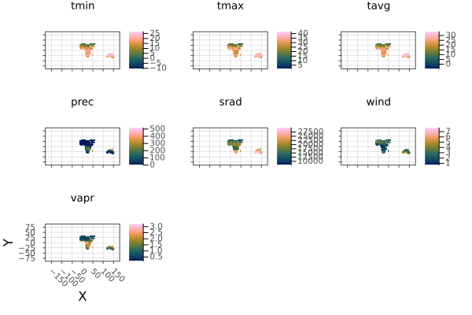
WARNING: This feature is experimental. It may change in future versions, and may not be 100% reliable in all cases. Please file github issues if problems occur.
#
Rasters.mosaic — Method.
mosaic(f, regions...; missingval, atol)
mosaic(f, regions; missingval, atol)
Combine regions into a single raster.
Arguments
f: A reducing function (mean,sum,first,lastetc.) for values whereregionsoverlap.regions: Iterable or splattedRasterorRasterStack.
Keywords
missingval: Fills empty areas, and defualts to themissingvalof the first region.atol: Absolute tolerance for comparison between index values. This is often required due to minor differences in range values due to floating point error. It is not applied to non-float dimensions. A tuple of tolerances may be passed, matching the dimension order.filename: a filename to write to directly, useful for large files.suffix: a string or value to append to the filename. A tuple ofsuffixwill be applied to stack layers.keys(stack)are the default.
If your mosaic has has apparent line errors, increase the atol value.
Example
Here we cut out Australia and Africa from a stack, and join them with mosaic.
using Rasters, RasterDataSources, ArchGDAL, Plots
st = RasterStack(WorldClim{Climate}; month=1);
africa = st[X(-20.0 .. 60.0), Y(-40.0 .. 35.0)]
a = plot(africa)
aus = st[X(100.0 .. 160.0), Y(-50.0 .. -10.0)]
b = plot(aus)
# Combine with mosaic
mos = mosaic(first, aus, africa)
c = plot(mos)
savefig(a, "docs/build/mosaic_example_africa.png")
savefig(b, "docs/build/mosaic_example_aus.png")
savefig(c, "docs/build/mosaic_example_combined.png")
nothing
# output
Individual continents
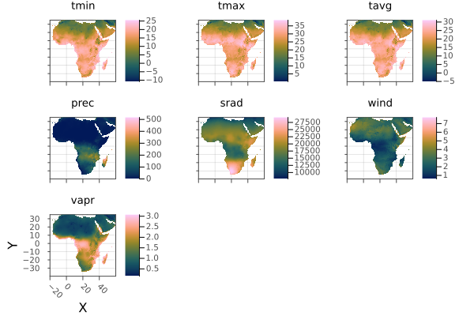
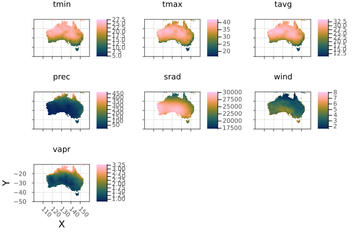
Mosaic of continents
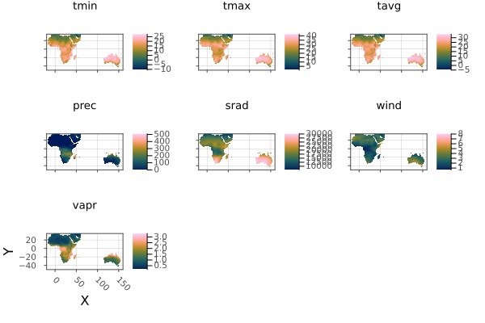
WARNING: This feature is experimental. It may change in future versions, and may not be 100% reliable in all cases. Please file github issues if problems occur.
#
Rasters.points — Method.
points(A::AbstractRaster; dims=(YDim, XDim), ignore_missing) => Array{Tuple}
Returns a generator of the points in A for dimensions in dims, where points are a tuple of the values in each specified dimension index.
Keywords
dimsthe dimensions to return points from. The first slice of other layers will be used.ignore_missing: wether to ignore missing values in the array when considering points. Iftrue, all points in the dimensions will be returned, iffalseonly the points that are not=== missingval(A)will be returned.
The order of dims determines the order of the points.
WARNING: This feature is experimental. It may change in future versions, and may not be 100% reliable in all cases. Please file github issues if problems occur.
#
Rasters.rasterize — Function.
rasterize([reducer], data; kw...)
Rasterize a GeoInterface.jl compatable geometry or feature, or a Tables.jl table with a :geometry column of GeoInterface.jl objects, or X, Y points columns.
Arguments
reducer: a reducing function to reduce the fill value for all geometries that cover or touch a pixel down to a single value. The default islast. Any that takes an iterable and returns a single value will work, including custom functions. However, there are optimisations for built-in methods includingsum,first,last,minimum,maximum,extremaandStatistics.mean. These may be an order of magnitude or more faster thancountis a special-cased as it does not need a fill value.data: a GeoInterface.jlAbstractGeometry, or a nestedVectorofAbstractGeometry, or a Tables.jl compatible object containing a:geometrycolumn or points and values columns.
Keywords
These are detected automatically from data where possible.
to: aRaster,RasterStack,TupleofDimensionorExtents.Extent. If notoobject is provided the extent will be calculated from the geometries, Additionally, when notoobject or anExtentis passed forto, thesizeorreskeyword must also be used.res: the resolution of the dimensions, aRealorTuple{<:Real,<:Real}. Only required whentois not used or is anExtents.Extent, andsizeis not used.size: the size of the output array, as aTuple{Int,Int}or singleIntfor a square. Only required whentois not used or is anExtents.Extent, andresis not used.crs: acrswhich will be attached to the resulting raster whentonot passed or is anExtent. Otherwise the crs fromtois used.shape: Forcedatato be treated as:polygon,:lineor:pointgeometries. using points or lines as polygons may have unexpected results.-
boundary: for polygons, include pixels where the:centeris inside the polygon, where the polygon:touchesthe pixel, or that are completely:insidethe polygon. The default is:center. -
fill: the value or values to fill a polygon with. ASymbolor tuple ofSymbolwill be used to retrieve properties from features or column values from table rows. An array or other iterable will be used for each geometry, in order.fillcan also be a function of the current value, e.g.x -> x + 1. op: A reducing function that accepts two values and returns one, likemintominimum. For common methods this will be assigned for you, or is not required. But you can use it instead of areduceras it will usually be faster.shape: forcedatato be treated as:polygon,:lineor:point, where possible Points can't be treated as lines or polygons, and lines may not work as polygons, but an attempt will be made.geometrycolumn:Symbolto manually select the column the geometries are in whendatais a Tables.jl compatible table, or a tuple ofSymbolfor columns of point coordinates.progress: show a progress bar,trueby default,falseto hide..verbose: print information and warnings whne there are problems with the rasterisation.trueby default.-
threaded: run operations in parallel,falseby default. In some circumstancesthreadedcan give large speedups over single-threaded operation. This can be true for complicated geometries written into low-resolution rasters, but may not be for simple geometries with high-resolution rasters. With very large rasters threading may be counter productive due to excessing memory use. Caution should also be used:threadedshould not be used in in-place functions wrinting toBitArrayor other arrays where race conditions can occur. -
filename: a filename to write to directly, useful for large files. suffix: a string or value to append to the filename. A tuple ofsuffixwill be applied to stack layers.keys(stack)are the default.
Example
Rasterize a shapefile for China and plot, with a border.
using Rasters, RasterDataSources, ArchGDAL, Plots, Dates, Shapefile, Downloads
using Rasters.LookupArrays
# Download a borders shapefile
shapefile_url = "https://github.com/nvkelso/natural-earth-vector/raw/master/10m_cultural/ne_10m_admin_0_countries.shp"
shapefile_name = "country_borders.shp"
isfile(shapefile_name) || Downloads.download(shapefile_url, shapefile_name)
# Load the shapes for china
china_border = Shapefile.Handle(shapefile_name).shapes[10]
# Rasterize the border polygon
china = rasterize(last, china_border; res=0.1, missingval=0, fill=1, boundary=:touches, progress=false)
# And plot
p = plot(china; color=:spring, legend=false)
plot!(p, china_border; fillalpha=0, linewidth=0.6)
savefig("docs/build/china_rasterized.png"); nothing
# output
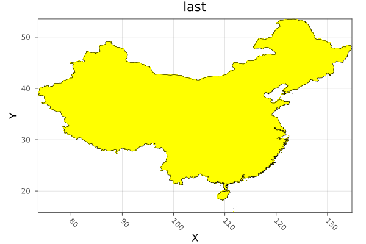
WARNING: This feature is experimental. It may change in future versions, and may not be 100% reliable in all cases. Please file github issues if problems occur.
#
Rasters.rasterize! — Function.
rasterize!([reducer], dest, data; kw...)
Rasterize the geometries in data into the Raster or RasterStack dest, using the values specified by fill.
Arguments
dest: aRasterorRasterStackto rasterize into.reducer: a reducing function to reduce the fill value for all geometries that cover or touch a pixel down to a single value. The default islast. Any that takes an iterable and returns a single value will work, including custom functions. However, there are optimisations for built-in methods includingsum,first,last,minimum,maximum,extremaandStatistics.mean. These may be an order of magnitude or more faster thancountis a special-cased as it does not need a fill value.data: a GeoInterface.jlAbstractGeometry, or a nestedVectorofAbstractGeometry, or a Tables.jl compatible object containing a:geometrycolumn or points and values columns.
Keywords
These are detected automatically from A and data where possible.
fill: the value or values to fill a polygon with. ASymbolor tuple ofSymbolwill be used to retrieve properties from features or column values from table rows. An array or other iterable will be used for each geometry, in order.fillcan also be a function of the current value, e.g.x -> x + 1.op: A reducing function that accepts two values and returns one, likemintominimum. For common methods this will be assigned for you, or is not required. But you can use it instead of areduceras it will usually be faster.shape: forcedatato be treated as:polygon,:lineor:point, where possible Points can't be treated as lines or polygons, and lines may not work as polygons, but an attempt will be made.geometrycolumn:Symbolto manually select the column the geometries are in whendatais a Tables.jl compatible table, or a tuple ofSymbolfor columns of point coordinates.progress: show a progress bar,trueby default,falseto hide..verbose: print information and warnings whne there are problems with the rasterisation.trueby default.-
threaded: run operations in parallel,falseby default. In some circumstancesthreadedcan give large speedups over single-threaded operation. This can be true for complicated geometries written into low-resolution rasters, but may not be for simple geometries with high-resolution rasters. With very large rasters threading may be counter productive due to excessing memory use. Caution should also be used:threadedshould not be used in in-place functions wrinting toBitArrayor other arrays where race conditions can occur. -
to: aRaster,RasterStack,TupleofDimensionorExtents.Extent. If notoobject is provided the extent will be calculated from the geometries, Additionally, when notoobject or anExtentis passed forto, thesizeorreskeyword must also be used. res: the resolution of the dimensions, aRealorTuple{<:Real,<:Real}. Only required whentois not used or is anExtents.Extent, andsizeis not used.size: the size of the output array, as aTuple{Int,Int}or singleIntfor a square. Only required whentois not used or is anExtents.Extent, andresis not used.crs: acrswhich will be attached to the resulting raster whentonot passed or is anExtent. Otherwise the crs fromtois used.shape: Forcedatato be treated as:polygon,:lineor:pointgeometries. using points or lines as polygons may have unexpected results.boundary: for polygons, include pixels where the:centeris inside the polygon, where the polygon:touchesthe pixel, or that are completely:insidethe polygon. The default is:center.
Example
using Rasters, RasterDataSources, ArchGDAL, Plots, Dates, Shapefile, GeoInterface, Downloads
using Rasters.LookupArrays
# Download a borders shapefile
shapefile_url = "https://github.com/nvkelso/natural-earth-vector/raw/master/10m_cultural/ne_10m_admin_0_countries.shp"
shapefile_name = "country_borders.shp"
isfile(shapefile_name) || Downloads.download(shapefile_url, shapefile_name)
# Load the shapes for indonesia
indonesia_border = Shapefile.Handle(shapefile_name).shapes[1]
# Make an empty EPSG 4326 projected Raster of the area of Indonesia
dimz = X(Projected(90.0:0.1:145; sampling=Intervals(), crs=EPSG(4326))),
Y(Projected(-15.0:0.1:10.9; sampling=Intervals(), crs=EPSG(4326)))
A = zeros(UInt32, dimz; missingval=UInt32(0))
# Rasterize each indonesian island with a different number. The islands are
# rings of a multi-polygon, so we use `GI.getring` to get them all separately.
islands = collect(GeoInterface.getring(indonesia_border))
rasterize!(last, A, islands; fill=1:length(islands), progress=false)
# And plot
p = plot(Rasters.trim(A); color=:spring)
plot!(p, indonesia_border; fillalpha=0, linewidth=0.7)
savefig("docs/build/indonesia_rasterized.png"); nothing
# output
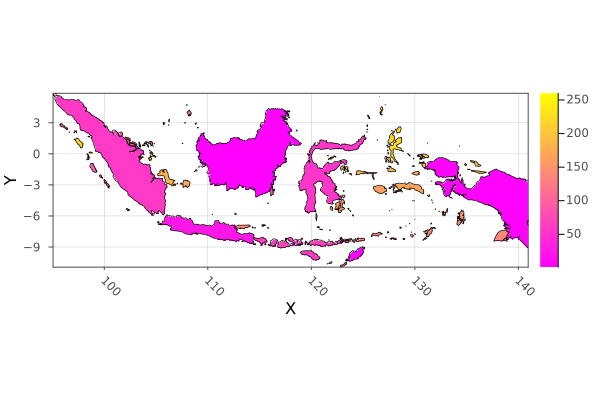
WARNING: This feature is experimental. It may change in future versions, and may not be 100% reliable in all cases. Please file github issues if problems occur.
#
Rasters.replace_missing — Method.
replace_missing(a::AbstractRaster, newmissingval)
replace_missing(a::AbstractRasterStack, newmissingval)
Replace missing values in the array or stack with a new missing value, also updating the missingval field/s.
Keywords
filename: a filename to write to directly, useful for large files.suffix: a string or value to append to the filename. A tuple ofsuffixwill be applied to stack layers.keys(stack)are the default.
Example
using Rasters, RasterDataSources, ArchGDAL
A = Raster(WorldClim{Climate}, :prec; month=1) |> replace_missing
missingval(A)
# output
missing
#
Rasters.reproject — Method.
reproject(source::GeoFormat, target::GeoFormat, dim::Dimension, val)
reproject uses ArchGDAL.reproject, but implemented for a reprojecting a value array of values, a single dimension at a time.
#
Rasters.reproject — Method.
reproject(obj; crs)
Reproject the lookups of obj to a different crs.
This is a lossless operation for the raster data, as only the lookup values change. This is only possible when the axes of source and destination projections are alligned: the change is usually from a Regular and an Irregular lookup spans.
For converting between projections that are rotated, skewed or warped in any way, use resample.
Dimensions without an AbstractProjected lookup (such as a Ti dimension) are silently returned without modification.
Arguments
obj: aLookupArray,Dimension,TupleofDimension,RasterorRasterStack.crs: acrswhich will be attached to the resulting raster whentonot passed or is anExtent. Otherwise the crs fromtois used.
#
Rasters.setcrs — Method.
setcrs(x, crs)
Set the crs of a Raster, RasterStack, Tuple of Dimension, or a Dimension. The crs is expected to be a GeoFormatTypes.jl CRS or Mixed GeoFormat type
#
Rasters.setmappedcrs — Method.
setmappedcrs(x, crs)
Set the mapped crs of a Raster, a RasterStack, a Tuple of Dimension, or a Dimension. The crs is expected to be a GeoFormatTypes.jl CRS or Mixed GeoFormat type
#
Rasters.slice — Method.
slice(A::Union{AbstractRaster,AbstractRasterStack,AbstracRasterSeries}, dims) => RasterSeries
Slice views along some dimension/s to obtain a RasterSeries of the slices.
For a Raster or RasterStack this will return a RasterSeries of Raster or RasterStack that are slices along the specified dimensions.
For a RasterSeries, the output is another series where the child objects are sliced and the series dimensions index is now of the child dimensions combined. slice on a RasterSeries with no dimensions will slice along the dimensions shared by both the series and child object.
WARNING: This feature is experimental. It may change in future versions, and may not be 100% reliable in all cases. Please file github issues if problems occur.
#
Rasters.trim — Method.
trim(x; dims::Tuple, pad::Int)
Trim missingval(x) from x for axes in dims, returning a view of x.
Arguments
x: ARasterorRasterStack. For stacks, all layers must having missing values for a pixel for it to be trimmed.
Keywords
dims: By defaultdims=(XDim, YDim), so that trimming keeps the area ofXandYthat contains non-missing values along all other dimensions.pad: The trimmed size will be padded bypadon all sides, although padding will not be added beyond the original extent of the array.
As trim is lazy, filename and suffix keywords are not used.
Example
Create trimmed layers of Australian habitat heterogeneity.
using Rasters, RasterDataSources, Plots
layers = (:evenness, :range, :contrast, :correlation)
st = RasterStack(EarthEnv{HabitatHeterogeneity}, layers)
# Roughly cut out australia
ausbounds = X(100 .. 160), Y(-50 .. -10)
aus = st[ausbounds...]
a = plot(aus)
# Trim missing values and plot
b = plot(trim(aus))
savefig(a, "docs/build/trim_example_before.png");
savefig(b, "docs/build/trim_example_after.png"); nothing
# output
Before trim:
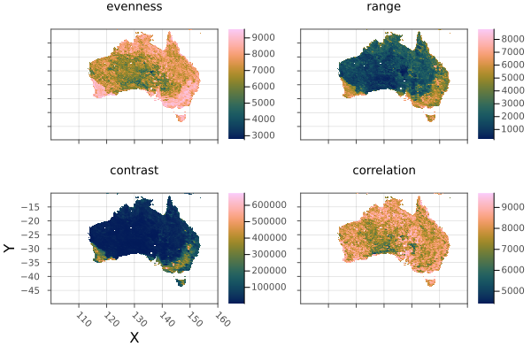
After trim:
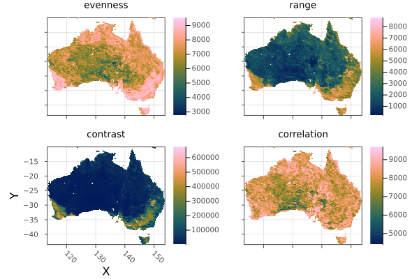
WARNING: This feature is experimental. It may change in future versions, and may not be 100% reliable in all cases. Please file github issues if problems occur.
#
Rasters.zonal — Method.
zonal(f, x::Union{Raster,RasterStack}; of, kw...)
Calculate zonal statistics for the the zone of a Raster or RasterStack covered by the of object/s.
Arguments
f: any function that reduces an iterable to a single value, such assumorStatistics.meanx: ARasterorRasterStackof: ARaster,RasterStack, dim tuple, extent, GeoInterface.jl compatible geometry, Tables.jl compatible table of a:geometrycolumn, or anAbstractVectorof any of these objects..
Keywords
These can be used when of is a GeoInterface.jl compatible object:
shape: Forcedatato be treated as:polygon,:lineor:point, where possible.boundary: for polygons, include pixels where the:centeris inside the polygon, where the line:touchesthe pixel, or that are completely:insideinside the polygon. The default is:center.progress: show a progress bar,trueby default,falseto hide..
Example
``jldoctest using Rasters, RasterDataSources, ArchGDAL, Shapefile, DataFrames, Downloads, Statistics, Dates
Download a borders shapefile
neurl = "https://github.com/nvkelso/natural-earth-vector/raw/master/10mcultural/ne10madmin0countries" shpurl, dbfurl = neurl * ".shp", neurl * ".dbf" shpname, dbfname = "countryborders.shp", "countryborders.dbf" isfile(shpname) || Downloads.download(shpurl, shpname) isfile(dbfurl) || Downloads.download(dbfurl, dbfname)
Download and read a raster stack from WorldClim
st = RasterStack(WorldClim{Climate}; month=Jan, lazy=false)
Load the shapes for world countries
countries = Shapefile.Table(shp_name) |> DataFrame
Calculate the january mean of all climate variables for all countries
january_stats = zonal(mean, st; of=countries, boundary=:touches, progress=false) |> DataFrame
Add the country name column (natural earth has some string errors it seems)
insertcols!(january_stats, 1, :country => first.(split.(countries.ADMIN, r"[^A-Za-z ]")))
output
258×8 DataFrame Row │ country tmin tmax tavg prec ⋯ │ SubStrin… Float32 Float32 Float32 Float64 ⋯ ─────┼────────────────────────────────────────────────────────────────────────── 1 │ Indonesia 21.5447 29.1864 25.3656 271.063 ⋯ 2 │ Malaysia 21.3087 28.4291 24.8688 273.381 3 │ Chile 7.24534 17.9263 12.5858 78.1287 4 │ Bolivia 17.2065 27.7454 22.4759 192.542 5 │ Peru 15.0273 25.5504 20.2888 180.007 ⋯ 6 │ Argentina 13.6751 27.6715 20.6732 67.1837 7 │ Dhekelia Sovereign Base Area 5.87126 15.8991 10.8868 76.25 8 │ Cyprus 5.65921 14.6665 10.1622 97.4474 ⋮ │ ⋮ ⋮ ⋮ ⋮ ⋮ ⋱ 252 │ Spratly Islands 25.0 29.2 27.05 70.5 ⋯ 253 │ Clipperton Island 21.5 33.2727 27.4 6.0 254 │ Macao S 11.6694 17.7288 14.6988 28.0 255 │ Ashmore and Cartier Islands NaN NaN NaN NaN 256 │ Bajo Nuevo Bank NaN NaN NaN NaN ⋯ 257 │ Serranilla Bank NaN NaN NaN NaN 258 │ Scarborough Reef NaN NaN NaN NaN 3 columns and 243 rows omitted ```
Reference - Internal functions¤
#
Rasters.AbstractProjected — Type.
AbstractProjected <: AbstractSampled
Abstract supertype for projected index lookups.
#
Rasters.FileArray — Type.
FileArray{X} <: DiskArrays.AbstractDiskArray
Filearray is a DiskArrays.jl AbstractDiskArray. Instead of holding an open object, it just holds a filename string that is opened lazily when it needs to be read.
#
Rasters.FileStack — Type.
FileStack{X,K}
FileStack{X,K}(filename, types, sizes, eachchunk, haschunks, write)
A wrapper object that holds file pointer and size/chunking metadata for a multi-layered stack stored in a single file, typically netcdf or hdf5.
X is a backend type like NCDsource, and K is a tuple of Symbol keys.
#
Rasters.OpenStack — Type.
OpenStack{X,K}
OpenStack{X,K}(dataset)
A wrapper for any stack-like opened dataset that can be indexed with Symbol keys to retrieve AbstractArray layers.
OpenStack is usually hidden from users, wrapped in a regular RasterStack passed as the function argument in open(stack) when the stack is contained in a single file.
X is a backend type like NCDsource, and K is a tuple of Symbol keys.
#
Rasters.RasterDiskArray — Type.
RasterDiskArray <: DiskArrays.AbstractDiskArray
A basic DiskArrays.jl wrapper for objects that don't have one defined yet. When we open a FileArray it is replaced with a RasterDiskArray.
#
Base.open — Method.
open(f, A::AbstractRaster; write=false)
open is used to open any lazy=true AbstractRaster and do multiple operations on it in a safe way. The write keyword opens the file in write lookup so that it can be altered on disk using e.g. a broadcast.
f is a method that accepts a single argument - an Raster object which is just an AbstractRaster that holds an open disk-based object. Often it will be a do block:
lazy=false (in-memory) rasters will ignore open and pass themselves to f.
# A is an `Raster` wrapping the opened disk-based object.
open(Raster(filepath); write=true) do A
mask!(A; with=maskfile)
A[I...] .*= 2
# ... other things you need to do with the open file
end
By using a do block to open files we ensure they are always closed again after we finish working with them.
#
Base.read! — Method.
read!(src::Union{AbstractString,AbstractRaster}, dst::AbstractRaster)
read!(src::Union{AbstractString,AbstractRasterStack}, dst::AbstractRasterStack)
read!(scr::AbstractRasterSeries, dst::AbstractRasterSeries)
read! will copy the data from src to the object dst.
src can be an object or a file-path String.
#
Base.read — Method.
read(A::AbstractRaster)
read(A::AbstractRasterStack)
read(A::AbstractRasterSeries)
read will move a Rasters.jl object completely to memory.
#
Base.skipmissing — Method.
skipmissing(itr::Raster)
Returns an iterable over the elements in a Raster object, skipping any values equal to either the missingval or missing.
#
Base.write — Method.
Base.write(filepath::AbstractString, s::AbstractRasterSeries; kw...)
Write any AbstractRasterSeries to file, guessing the backend from the file extension.
The lookup values of the series will be appended to the filepath (before the extension), separated by underscores.
Keywords
See other docs for write. All keywords are passed through to Raster and RasterStack methods.
#
Base.write — Method.
Base.write(filename::AbstractString, s::AbstractRasterStack; suffix, kw...)
Write any AbstractRasterStack to file, guessing the backend from the file extension.
Keywords
suffix: suffix to append to file names. By default the layer key is used.
Other keyword arguments are passed to the write method for the backend.
If the source can't be saved as a stack-like object, individual array layers will be saved.
#
Base.write — Method.
Base.write(filename::AbstractString, A::AbstractRaster; kw...)
Write an AbstractRaster to file, guessing the backend from the file extension.
Keyword arguments are passed to the write method for the backend.
#
Base.write — Method.
Base.write(filename::AbstractString, ::Type{GRDsource}, s::AbstractRaster; force=false)
Write a Raster to a .grd file with a .gri header file. The extension of filename will be ignored.
Returns filename.